6 Week 6: Classification 1
This is the learning diary for week six, about the main method of remote sensing analysis. And the application is to identify the slum areas by two classification approach.
6.1 Summary
6.1.1 Classified data in Action
extract land cover from earth observation data
Urban expansion
Air pollution and LULC
Urban green spaces
Monitoring forests + illegal logging tree
Forest fires
6.1.2 Classify remote sense data
- Expert systems
a system that uses human knowledge to solve problems that normally require human intelligence
example: machine learning
- Classification and regression trees (CART)
classification trees
regression trees: subset the data into smaller chunks if linear regression doesn’t fit
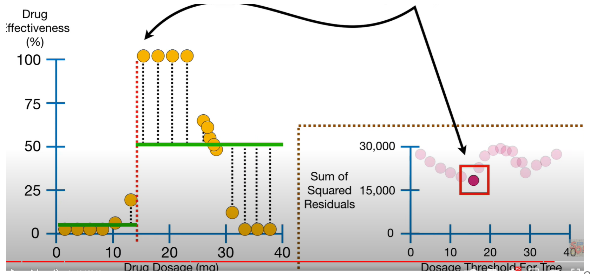
Figure 6.1: how data subseted - each leaf is a regression model, if we have a leaf with just one person or one pixel value it will be over fitting
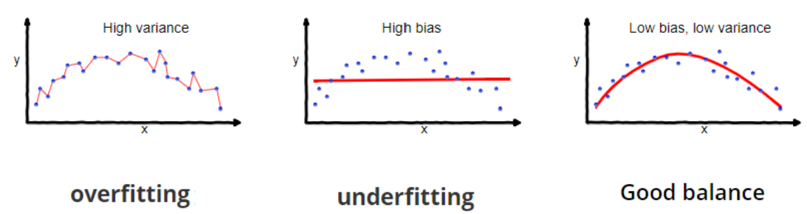
Figure 6.2: Source: Seema Singh To prevent over fitting we can set a minimum number of observations before splitting the data again.
Or limit how trees grow by pruning the weakest link with tree score: calculate the sum of the squared residuals (SSR) before and after removing a leaf
Tree score = SSR + tree penalty (alpha) * T (number of leaves)
- Random forests: many classification decision trees
Make decision tree from random number of variables (never all of them), and then repeat
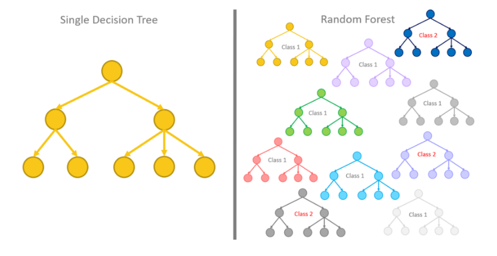
For each tree about 70% of the training data is used in the bootstrap, then test the rest data (OOB data), repeat for all OOB samples and the one getting most votes wins
Often the number of variables per tree is calculated from square root of variables in the original data.
- Image classification
- Turn every pixel in the image into one of a pre-defined categorical classification
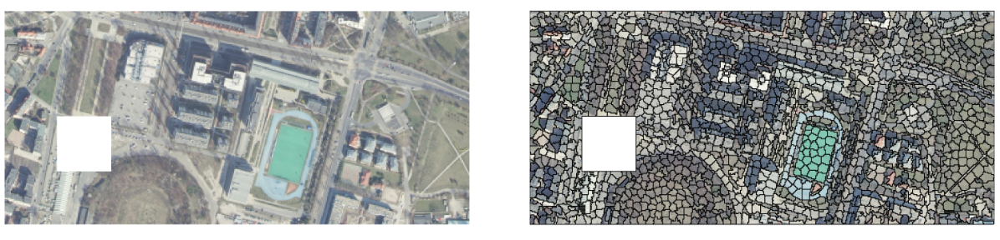
Category:
supervised classification: the user selects training samples for each land cover or land use class, and then an algorithm is used to classify the remaining pixels based on their spectral properties
unsupervised classification: the algorithm clusters pixels based on their spectral properties and then assigns each cluster to a land cover or land use class.
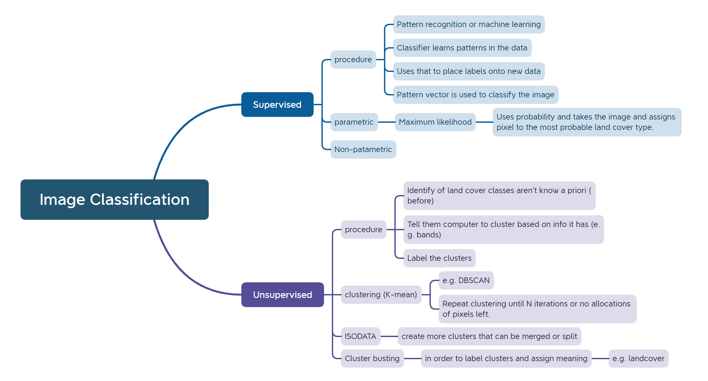
- can add everything such as texture
- Support Vector Machine (SVM)
a linear binary classifier, like logistic regression, classify training data by maximum margin classifier.
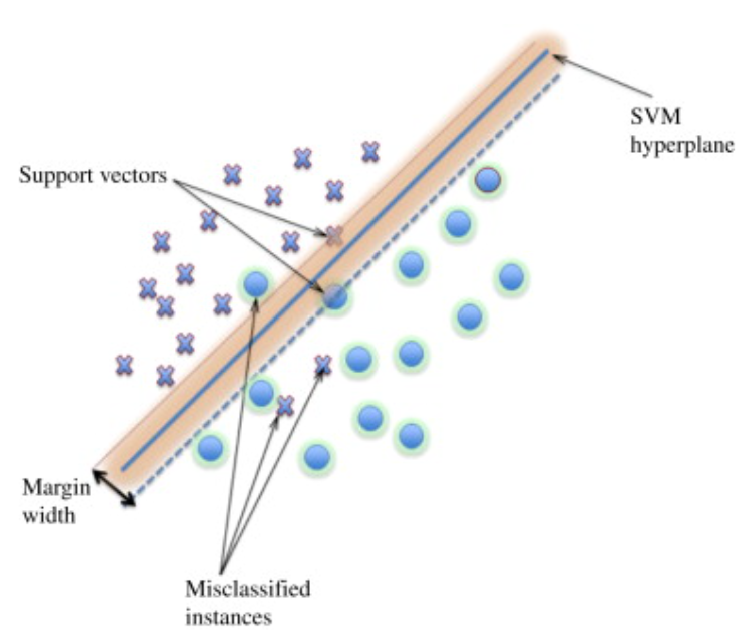
- Underlying theory: structural risk minimisation, minimise error on unseen data with no assumptions on the distribution
6.1.3 Practical
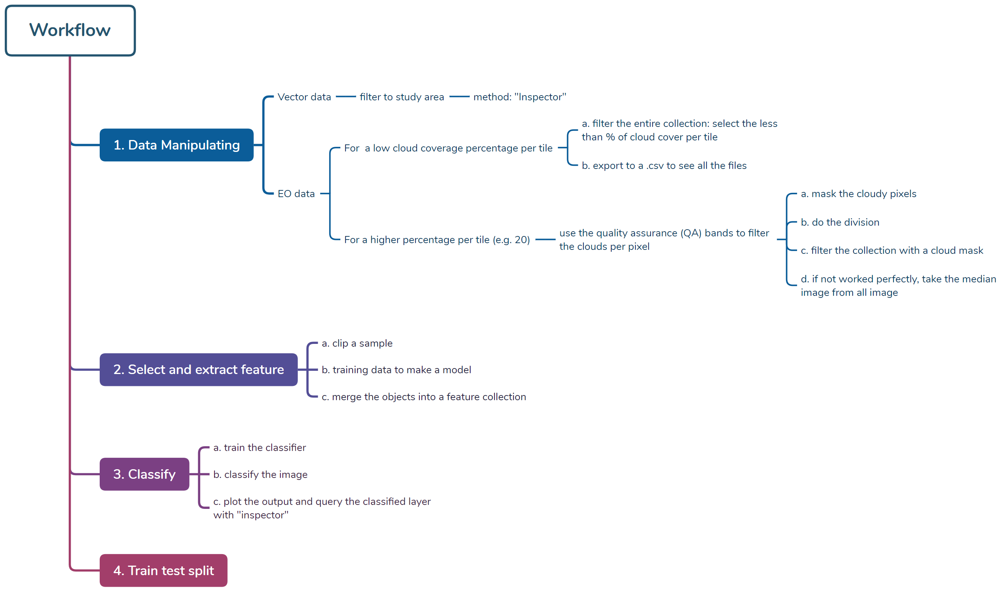
6.2 Application
Leonita et al. (2018) evaluated the performance of two machine learning algorithms, i.e., support vector machine (SVM) and random forest (RF), for slum mapping in support of the slum mapping campaign in Bandung, Indonesia. Recognizing the complexity in differentiating slum and formal areas in Indonesia, the study used a combination of spectral, contextual, and morphological features. In addition, sequential feature selection (SFS) combined with the Hilbert–Schmidt independence criterion (HSIC) was used to select significant features for classifying slums.
6.2.1 Policy background
The Indonesian government conducted a survey-based slum mapping (SBSM) program to reach the national target of “cities without slums” by 2019.
To upgrade slum areas, the Indonesian government requires a consistent, detailed, correct, and timely method that meets the requirements specified in planning documents. However, inconsistencies and temporal delays are shortcomings of the SBSM undertaken by the Indonesian government, due to the dependency on the surveyor’s experiences and the complexity of the slum indicators set.
By relying on such inconsistent maps, it will be difficult to monitor the national slum upgrading program’s progress.
Remote sensing imagery combined with machine learning algorithms could support the reduction of these inconsistencies.
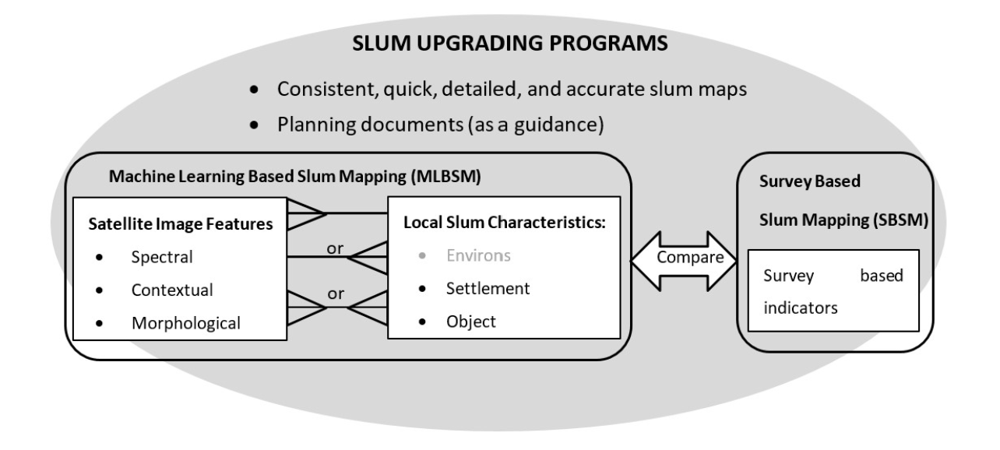
6.2.2 Data and Methodology
- Data source
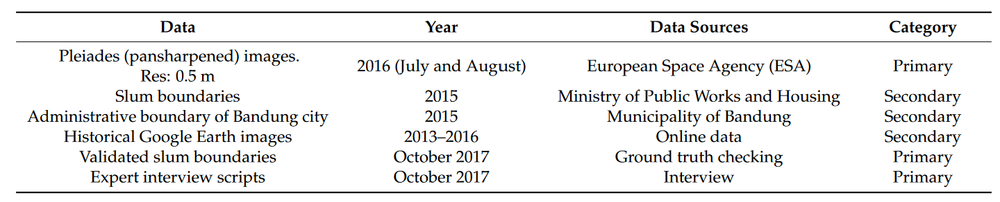
For classification, pleiades images are mainly used.
- Methodology
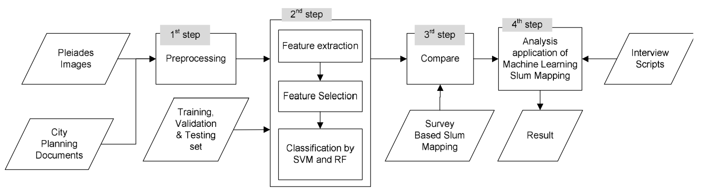
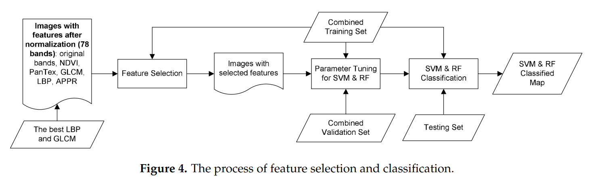
6.2.3 Results
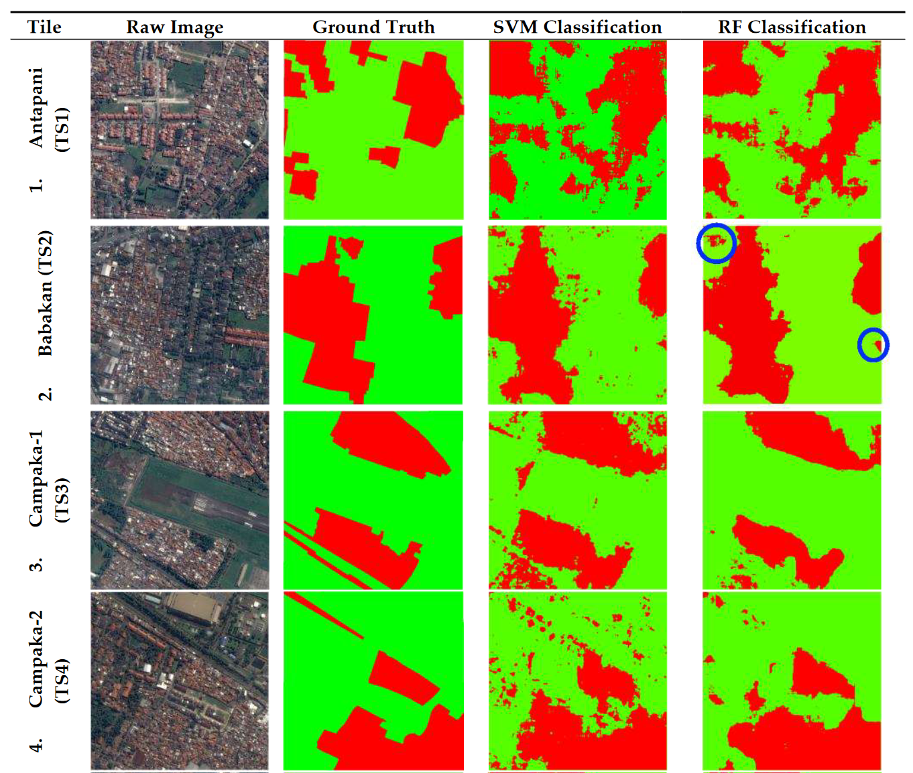
Slums are in the red and green are non-slums. Blue circles show an example of misclassification in the tile with the highest accuracy.
The overall accuracy of SVM is higher than RF, but the classified map of SVM is noisier. Thereby, the RF-classifies map with the feature selection method is selected.
6.3 Reflection
Each method of classification has its own advantage and disadvantage. The choice of classification method depends on the specific application and the characteristics of the data being analyzed. Some methods may be more accurate than others, depending on the complexity of the landscape and the spectral variability of the different land cover or land use classes.
In the study above (Leonita et al. 2018), both SVM and RF classification results show misclassification, particularly for small formal structures. This is due to similar morphological characteristics and roof material of both categories, thus with an image, we can only capture morphological slums(Wurm and Taubenböck 2018; Taubenböck, Kraff, and Wurm 2018). Furthermore, the uncertainty of slum boundaries plays a role that slums and nonslums have fuzzy boundaries.
Therefore, I think it is necessary to combine with the extraction of building information (see application section in Chapter 2) after a general classification. With the data of building density, building sizes and height, and average building distance, the slum boundary can be confirm at block level and even individual buildings level. This will improve the accuracy of slums detection.
Interestingly, I find Taubenböck and Kraff (2014) has carried out a study identifying characteristic physical features of the built environment that allows defining slum areas. Using highresolution optical satellite data, parameters such as building density, building heights, and sizes are used to differentiate between slums and formal settlements.
Going back to the lecture content, classification is complicated but powerful. It is an important method used in remote sensing for analyzing and categorizing land cover and land use patterns, providing valuable information for environmental monitoring, land use planning, and natural resource management. Also, it reduces a large amount of manual work.